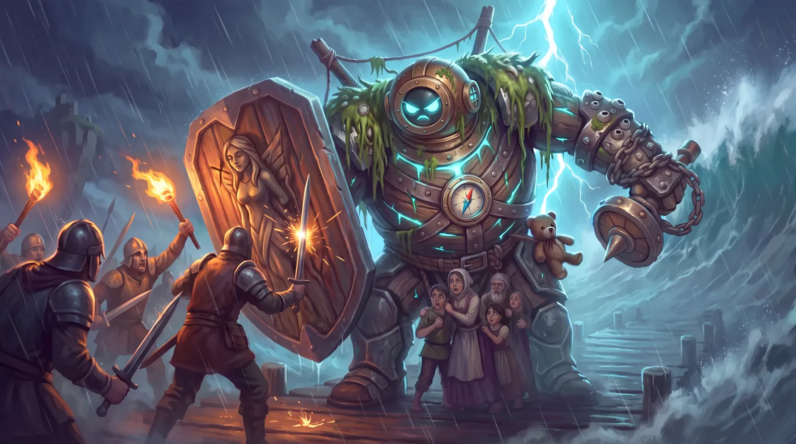

Hunter kits are on the site

Tap the expand button on any Hunter to see their full kit: weapon, passive, dash, both abilities and their ultimate.
The kits come straight from the game files, so they stay current as we tune each Hunter.
Updates from the build.

Tap the expand button on any Hunter to see their full kit: weapon, passive, dash, both abilities and their ultimate.
The kits come straight from the game files, so they stay current as we tune each Hunter.